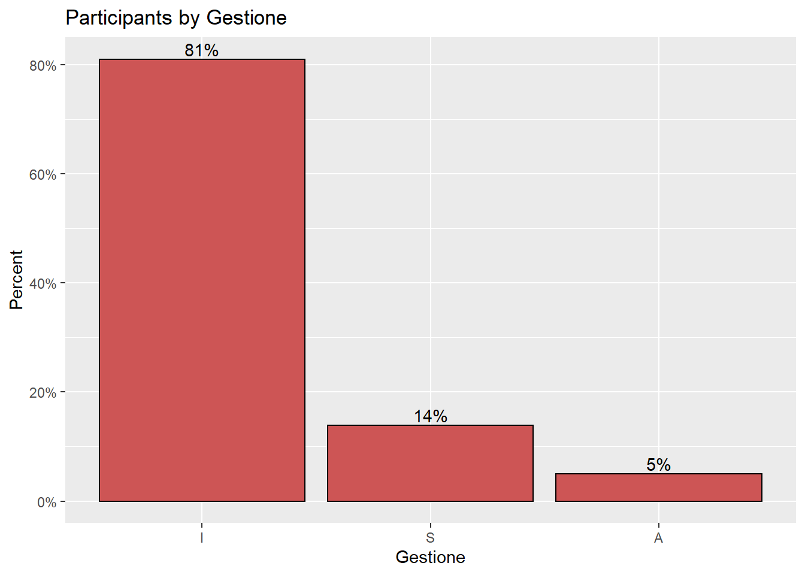

library(accidentr)
library(ggplot2)
library(plotly)
library(dplyr)
library(scales)
library(tidyr)Accidents Analysis Across Italy
Required Libraries
Load the data
data(Ita_Regions)overview of the data
str(Ita_Regions)'data.frame': 3052056 obs. of 25 variables:
$ DataRilevazione : chr "30/04/2022" "30/04/2022" "30/04/2022" "30/04/2022" ...
$ DataProtocollo : chr "11/06/2021" "04/02/2021" "26/09/2019" "11/10/2017" ...
$ DataAccadimento : chr "09/06/2021" "03/02/2021" "23/09/2019" "10/10/2017" ...
$ DataDefinizione : chr "31/01/2022" "14/02/2021" "01/01/1900" "11/10/2017" ...
$ DataMorte : chr "" "" "" "" ...
$ LuogoAccadimento : int 67 66 67 69 69 66 66 69 69 68 ...
$ IdentificativoInfortunato : int 33187926 10447851 4933280 10449679 13961119 19504939 1036005 33187410 33187412 1036919 ...
$ Genere : chr "M" "F" "M" "M" ...
$ Eta : int 33 43 40 37 53 52 48 29 47 50 ...
$ LuogoNascita : chr "ITAL" "ITAL" "ITAL" "ITAL" ...
$ ModalitaAccadimento : chr "S" "N" "N" "N" ...
$ ConSenzaMezzoTrasporto : chr "S" "N" "N" "N" ...
$ IdentificativoCaso : int 23650525 23439310 22509823 20993425 21379343 22530195 21616970 23638357 23638358 22003870 ...
$ DefinizioneAmministrativa : chr "P" "P" "I" "F" ...
$ DefinizioneAmministrativaEsitoMortale: chr "ND" "ND" "ND" "ND" ...
$ Indennizzo : chr "CA" "TE" "NE" "NE" ...
$ DecisioneIstruttoriaEsitoMortale : chr "ND" "ND" "ND" "ND" ...
$ GradoMenomazione : int 8 -1 -1 -1 -1 -1 -1 2 -1 -1 ...
$ GiorniIndennizzati : int 212 6 0 0 70 0 26 61 2 27 ...
$ IdentificativoDatoreLavoro : int 3460730 5826271 3572561 3851335 4438309 -1 6482147 4000839 9632626 9602830 ...
$ PosizioneAssicurativaTerritoriale : int 4387645 3456736 2293098 2356113 4349472 -1 7971583 10155524 11989960 12889950 ...
$ SettoreAttivitaEconomica : chr "M 70" "H 53" "C 25" "C 25" ...
$ Gestione : chr "I" "I" "I" "I" ...
$ GestioneTariffaria : chr "3" "4" "1" "1" ...
$ GrandeGruppoTariffario : chr "0" "0" "6" "6" ...Extract the number of accidents everyday
dataACC <- Ita_Regions %>%
count(DataAccadimento) %>%
mutate(dat = as.Date(DataAccadimento, format = "%m/%d/%Y")) %>%
select(dat, n)
#dataACCExreact the day, month and year
data2 <- dataACC
data2$Date_Time <- strptime(data2$dat, format = "%Y-%m-%d")
data2$Day <- format(data2$Date_Time, "%d")
data2$Month <- format(data2$Date_Time, "%m")
data2$NameMonth <- format(data2$Date_Time, "%b")
data2$Year <- format(data2$Date_Time, "%Y")aggregate number of accidents by year
mydata <- data2 %>%
group_by(Year) %>%
summarise(total = sum(n))
mydata# A tibble: 6 x 2
Year total
<chr> <int>
1 2017 249767
2 2018 251341
3 2019 257870
4 2020 220175
5 2021 216422
6 <NA> 1856481Aggregate number of accidents by month spread across the years
mydata <- data2 %>%
group_by(Year, Month, NameMonth) %>%
summarise(total = sum(n)) %>%
spread(key = "Year", value = total) `summarise()` has grouped output by 'Year', 'Month'. You can override using the
`.groups` argument.mydata# A tibble: 13 x 8
# Groups: Month [13]
Month NameMonth `2017` `2018` `2019` `2020` `2021` `<NA>`
<chr> <chr> <int> <int> <int> <int> <int> <int>
1 01 Jan 17015 16124 17140 14318 17440 NA
2 02 Feb 18635 18390 20703 18571 17450 NA
3 03 Mar 21490 20042 20047 20596 18160 NA
4 04 Apr 20487 19668 24026 18901 18225 NA
5 05 May 19898 23675 22133 17177 16914 NA
6 06 Jun 23722 22016 20710 17750 16819 NA
7 07 Jul 22037 20846 21588 19383 17692 NA
8 08 Aug 19062 20877 22267 16090 19796 NA
9 09 Sep 21251 22463 21718 21263 19082 NA
10 10 Oct 23302 21833 20616 21147 17602 NA
11 11 Nov 22017 20766 24828 18302 18485 NA
12 12 Dec 20851 24641 22094 16677 18757 NA
13 <NA> <NA> NA NA NA NA NA 18564811 Data Visualization
library(scales)
plotdata <- Ita_Regions %>%
count(Gestione) %>%
mutate(pct = n / sum(n),
pctlabel = paste0(round(pct*100), "%"))
# plot the bars as percentages,
# in decending order with bar labels
ggplot(plotdata,
aes(x = reorder(Gestione, -pct),
y = pct)) +
geom_bar(stat = "identity",
fill = "indianred3",
color = "black") +
geom_text(aes(label = pctlabel),
vjust = -0.25) +
scale_y_continuous(labels = percent) +
labs(x = "Gestione",
y = "Percent",
title = "Participants by Gestione")